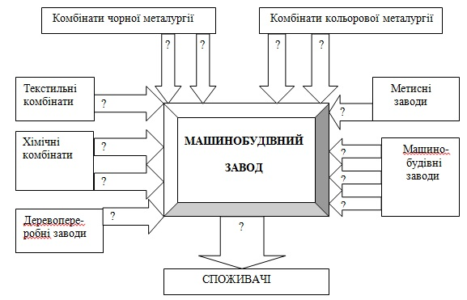
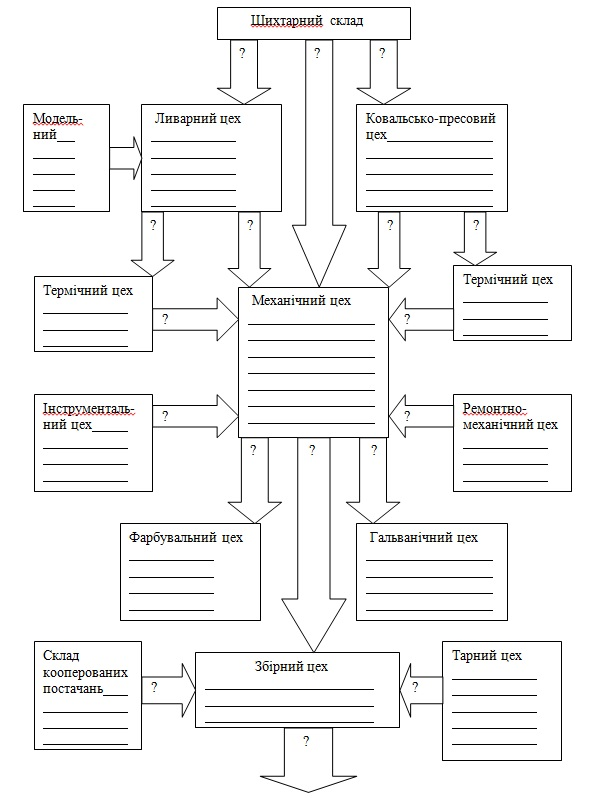
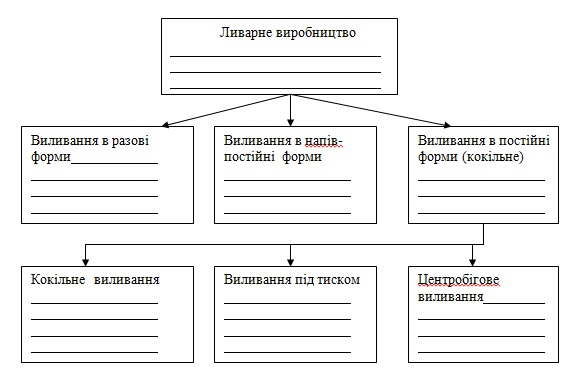
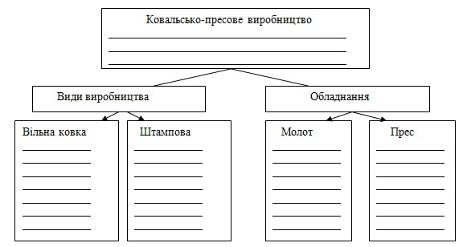
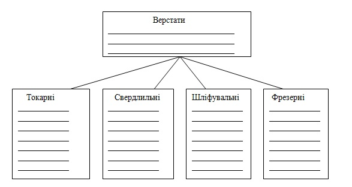

|
|

|
|
Заняття
6.
Тема: МАШИНОБУДУВАННЯ
Питання до розгляду:
1. Значення машин
і машинобудування, загальне поняття про машини
2. Виробництво машин
3. Нове в технології машинобудівного виробництва
4. Класифікація галузей машинобудування
ЧИ
ЗНАЄТЕ ВИ ЩО:
* Лідери машинобудування за вартістю основних
фондів розподілені таким чином: GeneralElectric -
750,507Млрд.дол., GeneralMotors -
479,603Млрд.дол., ToyotaMotor - 227,513Млрд.дол.,
DaimlerChrysler - 248,324Млрд.дол.
* Мелітополь, не дивлячись на ряд змін і
складнощів в промисловому сегменті, все ще є
досить значущим містом в Україні в галузі
машинобудування, забезпечуючи країну продукцією
верстатобудування, сільськогосподарського
машинобудування, транспортного машинобудування.
* Кажучи про автоматизацію виробництва, варто
відзначити, що навіть в побуті все ширше починають
використовуватися різноманітні автоматичні
пристрої і навіть роботи. Так велику популярність
набирають роботи-прибиральники, за своєю суттю -
автоматичні пилососи, здатні самостійно прибратися
в квартирі і повернутися на місце для заряджання
без участі людини.
* Мініатюризація в електроніці на сьогодні це
звична справа. Проте науково технічний прогрес
лише починає вивчати теорію виробництва і
експлуатації найменших автоматичних систем:
нанороботів. Вони відомі так само як наніти,
розумний пил.
* Нанороботи знаходяться в науково-дослідній
стадії створення. Розробці компонентів
нанопристроїв і безпосередньо нанороботам
присвячений ряд міжнародних наукових конференцій.
У 2010 році були вперше продемонстровані
нанороботи на основі ДНК, здатні переміщуватися в
просторі. Перше корисне застосування наномашин,
якщо вони з'являться, планується в медичних
технологіях.
* Проект з розшифровці генома людини (HGP) -
міжнародний науково-дослідний проект, головною
метою якого було визначити послідовність
нуклеотідов, які складають ДНК в людському геномі,
почався в 1990 році. У 2000 році була складена
робоча чернетка структури генома, повний геном - в
2003 році, який загальноприйняте вважати «роком
розшифровки генома людини», проте і сьогодні
додатковий аналіз деяких ділянок ще не закінчений.
* Найбільшими суднобудівельними потужностями
володіють корейські підприємства. Так тільки три
корейські компанії Hyundai, Daewoo, Samsung
спільно поставляють до 260 суден в рік (тоннаж
9,67 млн.т). Китайська CSSC -99 (1,97 млн.т),
японська Imabari - 79 (1,7 млн.т). А на долю трьох
провідних суднобудівельних держав - Південної
Кореї, Китаю і Японії - доводиться більше 90%
світового портфеля замовлень, тоді як на всю решту
країн разом узяті - всього 9,28%
* Згідно з даними Clarkson R.S., світовий торговий
флот, що знаходиться в експлуатації, складається з
68990 суден, сумарна ринкова вартість яких
оцінюється в $1,1 трлн. Світовий портфель
замовлень, що є на сьогодні, оцінюється в $488
млрд. або 40% вартості діючого флоту. Про
величезний ривок у вартості замовленого флоту за
останні роки свідчить той факт, що впродовж всіх
90-х рр. минулого сторіччя щорічний об'єм
замовлень на новий тоннаж складав близько $20-30
млрд.
* Найбільшим судном в світі є Seawise Giant
водотоннажністю 564,7 тисяч тонн. Судно побудоване
в 1981 році, завдовжки в 466 метрів. Для
порівняння: Титаник мав водотоннажність в 52,3
тисячі тонн.
* Найкрупнішим великим літаком в світі на 2011 рік
є транспортний літак надвеликої вантажопідйомності
Ан-225 «Мрія» (по класифікації НАТО: Cossack –
«Козак»). Він здатний підняти до 250 тонн,
перевести такий вантаж на відстань близько 15 000
км з швидкістю близько 800 км/ч. У експлуатації
знаходиться один єдиний літак.
Питання
для співбесіди:
1. Значення і галузевий склад машинобудування.
2. Міжгалузеві зв’язки машинобудування.
3. Особливості розміщення підприємств
машинобудування.
4. Ливарне виробництво.
5. Ковальсько-пресове виробництво.
6. Робота механічного цеху.
7. Збірне виробництво.

Завдання
№1
Познайомитись з принципами класифікації галузей
машинобудування. Скласти структурні схеми
класифікації машинобудування за призначенням
продукції та за техніко-економічними ознаками. На
схемах записати основні ознаки угрупувань і
приклади галузей. Заповнити форми 31 і 32.
Призначення
продукції
|
Характеристики
та приклади продукції
|
Енергетичне
машинобудування
|
|
Транспортне
машинобудування
|
|
Верстатобудування
|
|
Сільскогосподарське
машинобудування
|
|
Виробництво
промислового обладнання
|
|
Форма 31.
Класифікація машинбдудування за
призначенням продукції.
| Особливості
виробництва |
Характеристики
та приклади продукції |
Металоємні
галузі
|
|
Працеємні
галузі
|
|
Наукоємні
галузі
|
|
Малотранспортабельна
продукція |
|
Форма 32.
Класифікація
машинобудування
за техніко-економічними ознаками
Завдання №2
Виявити виробничі зв’язки машинобудівного заводу з
іншими підприємствами. Визначити
внутрішньогалузеві та міжгалузеві зв’язки.
Доповнити форму 33.

Форма
33. Виробниці звязки
машинобудівного заводу
Завдання №3
Виявити типову структуру машинобудівного заводу.
Визначити основні стадії виробничого процесу і
функції цехів машинобудівного заводу.
Доповнити форму 34.

Форма
34. Структура машинобудівного заводу.
Завдання №4
Систематизувати дані про ливарне виробництво.
Визначити види, призначення і навести приклади.
Доповнити форму 35.

Форма 35. Ливарне виробництво
Завдання для самостійної роботи
Завдання
№5
Систематизувати дані про ковальсько-пресове
виробництво. Визначити види, призначення і навести
приклади.
Доповнити форму 36.

Форма
36. Кузнечно-пресове виробництво.
Завдання №6
Систематизувати дані про металорізальні верстати .
Визначити види, призначення і навести приклади.
Доповнити форму 37.

Форма
37. Металообробка
Завдання №8
Проаналізувати таблиці 1 та 2
охарактеризувати специфіку масового виробництва в
машинобудуванні. Дати приклади кожного з
виробництв за охватом.
|
Тип
станка
|
Тип
производства
|
Полезная
работа станка
|
Вспомогательная
работа
|
Подготовительно
-заключительная работа
|
Техническое
обслуживание рабочих мест
|
Потери
по организационным причинам
|
|
Токарный
|
Единичное
Мелкосерийное
Крупносерийное
|
21
37
48
|
30
28
21
|
18
11
9
|
7
5
4
|
24
19
18
|
|
Револьверный
|
Единичное
Мелкосерийное
Крупносерийное
Массовое
|
-
45
60
72
|
-
25
19
18
|
-
9
5
3
|
-
4
3
2
|
-
17
13
5
|
Таблиця 1.
Структура витрат робочого часу в
відсотках в залежності від вида виробництва.
|
Элементы
производственного процесса
|
Единичное
производство
|
Массовое
производство
|
|
1.
Количество конечной продукции,
выпускаемой за год, шт.
|
1-2
|
Тысячи
и более
|
|
2.
Уровень технологической и функциональной
специализации
|
Низкий
|
Высокий
|
|
3.
Количество деталеопераций, выполняемых
на одном рабочем месте за месяц
|
Свыше
40
|
1
|
|
4.
Уровень межпроектной и внутривидовой
унификации изделия и его элементов
|
Высокий
|
Низкий
|
|
5.
Технологический процесс изготовления
|
Маршрутная
технология
|
Пооперационная
технология
|
|
6.
Технологическое оборудование
|
Универсальное
|
Специальное
|
|
7.
Режущий и мерительный инструмент
|
Универсальный
|
Специальный
|
|
8.
Рабочие
|
Высокой
квалификации
|
Низкой
квалификации
|
|
9.
Коэффициент использования металлов
|
0.40-0.60
|
0.80-0.95
|
|
10.
Уровень автоматизации производства
|
0.30-0.50
|
0.90-0.99
|
|
11.
Трудоемкость и себестоимость
изготовления единицы продукции
|
Высокая
|
Низкая
|
|
12.
Качество продукции
|
Удовлетворительное
|
Хорошее
|
Таблиця 2.
Особливості типов виробництва.
Завдання №8
Визначити ступінь впливу природних і
соціально-економічних ресурсів та факторів на
розміщення підприємств різних галузей
машинобудування.
Заповнити форму 38 наступним чином: в кожну строку
таблиці запишіть: "вирішальний", "суттєвий",
"слабкий", "не впливає" в залежності від ступеня
впливу кожного окремого фактору на географічне
розміщення.
Види
виробництв
|
Сировинні
ресурси
|
Паливно-енергетичні
ресурси
|
Водні ресурси
|
Трудові
ресурси
|
Райони
споживання
продукції
|
Важке
машинобудування
|
|
|
|
|
|
Локомотовобудівництво
|
|
|
|
|
|
Суднобудування
|
|
|
|
|
|
Автобудування
|
|
|
|
|
|
Верстатобудування
|
|
|
|
|
|
Приладобудування
|
|
|
|
|
|
| Сульскогосподарське |
|
|
|
|
|
Форма 38.
Фактори впливу на розміщення підприємств
машинобудування.
ЕКЗАМЕНАЦІЙНІ
ПИТАННЯ
СПИСОК
ДЖЕРЕЛ
1. Куракина А.Ф. Основы промышленного и
сельскохоз. произв-ва .
М., 1981.
2. Плоткин М. Л. Основы промышленного
производства. М., 1977.
3. Хрущев А. Т. География промышленности
СССР. М., 1990.
4. Экономика отраслей народного хозяйства /
Под ред. А. С. Кима. Мн., 1987.
5. Анализ хоз. деятельности в промышлен. (под
редакцие В.И. Стражева). Мн., 1997.
6. Назаренко Н. Г. Экономика сельского хозяйства.
М., 1996.
7. Манулик А. В. Здравоохранение: вопросы теории и
организации управления Учеб.-метод, пособие. Мн.,
1994.
8. Щетинин В. П., Хроменков Н. А. Экономика
образования. М., 1998.
9. Ярошевич В. П., Шкурин М. И. Общий курс
транспорта: Учеб. пособие. Гомель, 1997
10. Фатхутдинов Р.А. Производственная логистика.
Типы производства. Режим доступу: http://www.bizeducation.ru/library/log/indust/7/fat2.htm
|
|
|
|